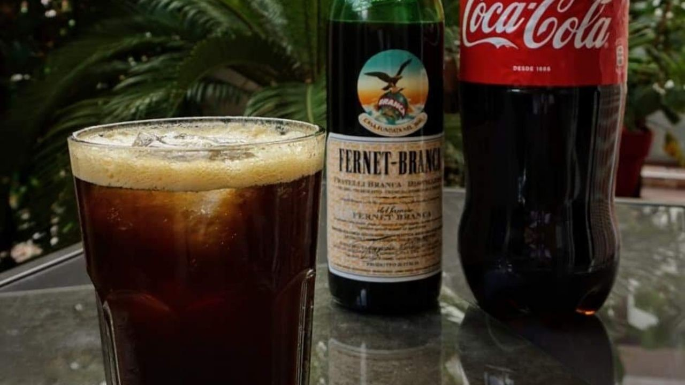

The perfect Fernet with Coca, don't try the Fernet alone.
Sometimes referred to as a Fernando or a Fernandito, Fernet con Coca is made by mixing the amaro Fernet-Branca with Coca-Cola, serving it tall over ice.
Ingredients
- 50ml of Fernet
- 200ml of Coca-Cola
- 3 ice cubes
How to make it
- In a large glass
- Add the ice, then the Fernet and lastly the Coca-Cola (do it slow so you give the gas time to dissapear and don't make a mess)
Go back